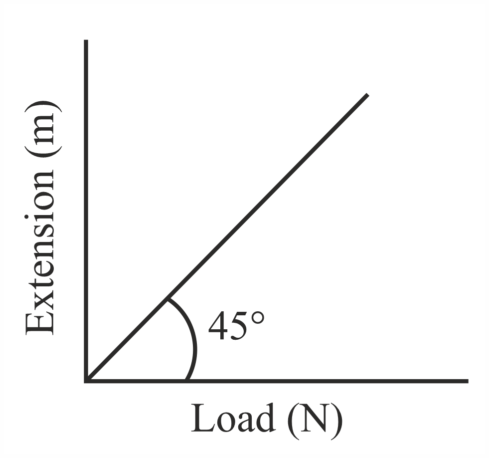

Filter questions
Q1
PHY-2021-0101-S2-Q001
2021 | 01 Sep | Shift 2
—
MCQ
A student determined Young's Modulus of elasticity using the formula 𝑌= 𝑀𝑔𝐿3 . The value of 𝑔 is taken to be 4bd3δ 9 . 8 m s-2 without any significant error, his observations are as following. Least count of the Equipment used for Observed Physical Quantity measurement Value Mass ( M ) 1 g 2 kg Length of bar ( L ) 1 mm 1 m Breadth of bar ( b ) 0 . 1 mm 4 cm Thickness of bar ( d ) 0 . 01 mm 0 . 4 cm Depression ( δ ) 0 . 01 mm 5 mm Then the fractional error in the measurement of 𝑌 is :
Answer: D
Q2
PHY-2021-0101-S2-Q001
2021 | 16 Mar | Shift 2
—
MCQ
In order to determine the Young's Modulus of a wire of radius 0. 2 cm (measured using a scale of least count ) and length (measured using a scale of least count ), a weight of mass = 0. 001 cm 1 m = 1 mm 1 kg (measured using a scale of least count = 1 g ) was hanged to get the elongation of 0. 5 cm (measured using a scale of least count 0. 001 cm ). What will be the fractional error in the value of Young's Modulus determined by this experiment?
Answer: D
Q3
PHY-2021-0101-S1-Q025
2021 | 22 Jul | Shift 1
—
Integer
The area of cross-section of a railway track is 0. 01 m2. The temperature variation is 10 °C. Coefficient of linear expansion of material of track is 10−5 ∘C−1. The energy stored per meter in the track is J m−1. (Young's modulus of material of track is 1011 N m−2 )
Answer: 5
Q4
PHY-2021-0101-S1-Q007
2021 | 24 Feb | Shift 1
—
MCQ
If 𝑌, 𝐾 and 𝜂 are the values of Young's modulus, bulk modulus and modulus of rigidity of any material respectively. Choose the correct relation for these parameters.
Answer: C
Q5
PHY-2021-0101-S1-Q007
2021 | 25 Feb | Shift 1
—
MCQ
Given below are two statements: one is labelled as Assertion A and the other is labelled as Reason R . Assertion : When a rod lying freely is heated, no thermal stress is developed in it. A Reason R : On heating, the length of the rod increases. In the light of the above statements, choose the correct answer from the options given below:
Answer: C
Q6
PHY-2021-0101-S1-Q006
2021 | 25 Jul | Shift 1
—
MCQ
Two wires of same length and radius are joined end to end and loaded. The Young's moduli of the materials of the two wires are 𝑌1 and 𝑌2. The combination behaves as a single wire then its Young's modulus is:
Answer: B
Q7
PHY-2021-0101-S1-Q008
2021 | 26 Feb | Shift 1
—
MCQ
The normal density of a material is ρ and its bulk modulus of elasticity is K . The magnitude of increase in density of material, when a pressure P is applied uniformly on all sides, will be :
Answer: B
Q8
PHY-2021-0101-S2-Q022
2021 | 27 Aug | Shift 2
—
Integer
Wires W1 and W2 are made of same material having the breaking stress of 1. 25 × 109 N m−2. W1 and W2 have cross-sectional area of 10−7 m2 and 10−7 m2 , respectively. Masses of and hang 8 × 4 × 20 kg 10 kg from them as shown in the figure. The maximum mass that can be placed in the pan without breaking the wires is _____ kg (Use g = 10 m s−2)
Answer: 40
Q9
PHY-2021-0101-S1-Q023
2021 | 31 Aug | Shift 1
—
Integer
When a rubber ball is taken to a depth of _______ m in deep sea, its volume decreases by 0. 5% (The bulk modulus of rubber = 9. 8 × 108 N m−2 Density of sea water = 103 kg m−3 , g = 9. 8 m s−2 )
Answer: 500
Q10
PHY-2021-0101-S2-Q007
2021 | 31 Aug | Shift 2
—
MCQ
Four identical hollow cylindrical columns of mild steel support a big structure of mass 50 × 103 kg . The inner and outer radii of each column are and respectively. Assuming uniform local distribution, 50 cm 100 cm calculate the compression strain of each column. [use 𝑌= 2 . 0 × 1011 Pa, 𝑔= 9 . 8 m s-2]
Answer: B
Q11
PHY-2022-0101-S1-Q001
2022 | 24 Jun | Shift 1
—
MCQ
Identify the pair of physical quantities which have different dimensions:
Answer: Option Question
Q12
PHY-2022-0101-S1-Q007
2022 | 24 Jun | Shift 1
—
MCQ
The bulk modulus of a liquid is 3 × 1010 Nm−2 . The pressure required to reduce the volume of liquid by 2% is : 108 m−2 108 m−2
Answer: B
Q13
PHY-2022-0101-S1-Q024
2022 | 25 Jun | Shift 1
—
Integer
The velocity of upper layer of water in a river is 36 km h-1. Shearing stress between horizontal layers of water is 10-3 m-2. Depth of the river is _____ m. (Co-efficient of viscosity of water is 10-2 s) N Pa
Answer: 100
Q14
PHY-2022-0101-S1-Q024
2022 | 26 Jun | Shift 1
—
Integer
The elastic behaviour of material for linear stress and linear strain, is shown in the figure. The energy density for a linear strain of 5 × 10−4 is _____ kJ m−3 . Assume that material is elastic upto the linear strain of 5 × 10−4 ,

Answer: 25
Q15
PHY-2023-0101-S1-Q023
2023 | 01 Feb | Shift 1
—
Integer
A certain pressure '𝑃' is applied to 1 litre of water and 2 litre of a liquid separately. Water gets compressed to 0 . 01% whereas the liquid gets compressed to 0 . 03%. The ratio of Bulk modulus of water to that of the liquid 3 is 𝑥. The value of 𝑥 is ______.

Answer: 1
Q16
PHY-2023-0101-S1-Q024
2023 | 06 Apr | Shift 1
—
Integer
A steel rod has a radius of 20 mm and a length of 2 . 0 m . A force of 62 . 8 kN stretches it along its length. 1011N 10-5. Young's modulus of steel is 2 . 0 × m-2. The longitudinal strain produced in the wire is _________ ×
Answer: 25
Q17
PHY-2023-0101-S1-Q010
2023 | 08 Apr | Shift 1
—
MCQ
An aluminium rod with Young’s modulus Y = 7. 0 × 1010 N m−2 undergoes elastic strain of 0. 04% . The energy per unit volume stored in the rod in SI unit
Answer: D
Q18
PHY-2023-0101-S2-Q001
2023 | 08 Apr | Shift 2
—
MCQ
Match List I with List II List I List II A. Torque I. M L−2 T−2 B. Stress II. M L2 T−2 C. Pressure gradient III. M L−1 T−1 Coefficient of D. viscosity IV. M L−1 T−2 Choose the correct answer from the options given below :
Answer: C
Q19
PHY-2023-0101-S2-Q010
2023 | 08 Apr | Shift 2
—
MCQ
A steel rod of length 1 m and cross-sectional area 10−4 m2 is heated from 0°C to 200°C without being allowed to extend or bend. The compressive tension produced in the rod is _____ ×104 N . (Given Young's modulus of steel = 2 × 1011 N m−2 , coefficient of linear expansion = 10−5 K−1 )
Answer: B
Q20
PHY-2023-0101-S1-Q023
2023 | 10 Apr | Shift 1
—
Integer
Two wires each of radius 0 . 2 cm and negligible mass, one made of steel and the other made of brass are loaded as shown in the figure. The elongation of the steel wire is ______10 – 6 m. [Young's modulus for steel 1011 – 2 and – 2] = 2 × N m 𝑔= 10 m s
Answer: 20
Q21
PHY-2023-0101-S1-Q006
2023 | 24 Jan | Shift 1
—
MCQ
A 100 m long wire having cross-sectional area 6 . 25 × 10-4 m2 and Young's modulus is 1010 N m-2 is subjected to a load of N, then the elongation in the wire will be : 250
Answer: D
Q22
PHY-2023-0101-S1-Q010
2023 | 25 Jan | Shift 1
—
MCQ
As shown in the figure, in an experiment to determine Young's modulus of a wire, the extension-load curve is plotted. The curve is a straight line passing through the origin and makes an angle of 45° with the load axis. The length of wire is 62. 8 cm and its diameter is 4 mm . The Young's modulus is found to be x × 104 N m−2 The value of x is _______.

Answer: C
Q23
PHY-2023-0101-S1-Q007
2023 | 30 Jan | Shift 1
—
MCQ
Choose the correct relationship between Poisson ratio 𝜎, bulk modulus ( 𝐾) and modulus of rigidity 𝜂 of a given solid object:
Answer: A
Q24
PHY-2023-0101-S1-Q024
2023 | 31 Jan | Shift 1
—
Integer
A thin rod having a length of 1 m and area of cross-section 3 × 10-6 m2 is suspended vertically from one end. The rod is cooled from 210°C to 160°C. After cooling, a mass 𝑀 is attached at the lower end of the rod such that the length of rod again becomes 1 m. Young's modulus and coefficient of linear expansion of the rod are 2 × 1011 N m-2 and 2 × 10-5 K-1, respectively. The value of 𝑀 is ______ kg. (Take 𝑔= 10 m s-2 )
Answer: 60
Q25
PHY-2023-0101-S2-Q009
2023 | 31 Jan | Shift 2
—
MCQ
Under the same load, wire A having length 5. 0 m and cross section 2. 5 × m2 stretches uniformly by the same amount as another wire B of length 6. 0 m and a cross section of 3. 0 × 10−5 m2 stretches. The ratio of the Young's modulus of wire A to that of wire B will be:
Answer: D
Q26
PHY-2024-0101-S1-Q008
2024 | 01 Feb | Shift 1
—
MCQ
With rise in temperature, the Young's modulus of elasticity
Answer: B
Q27
PHY-2024-0101-S2-Q023
2024 | 01 Feb | Shift 2
—
Integer
One end of a metal wire is fixed to a ceiling and a load of 2 kg hangs from the other end. A similar wire is attached to the bottom of the load and another load of 1 kg hangs from this lower wire. Then the ratio of longitudinal strain of upper wire to that of the lower wire will be [Area of cross section of wire = 0 . 005 cm2, 𝑌= 2 × 1011 N m-2 and 𝑔= 10 m s-2]
Answer: 3
Q28
PHY-2024-0101-S2-Q007
2024 | 05 Apr | Shift 2
—
MCQ
Match List-I with List-II : List-I List-II
Answer: B
Q29
PHY-2024-0101-S1-Q002
2024 | 08 Apr | Shift 1
—
MCQ
Young's modulus is determined by the equation given by Y = 49000 m l cm2 dyn where M is the mass and l is the extension of wire used in the experiment. Now error in Young modules is estimated by taking data from (Y ) M −l plot in graph paper. The smallest scale divisions are 5 g and 0.02 cm along load axis and extension axis respectively. If the value of M and l are 500 g and 2 cm respectively then percentage error of Y is :
Answer: B
Q30
PHY-2024-0101-S1-Q023
2024 | 09 Apr | Shift 1
—
Integer
Two persons pull a wire towards themselves. Each person exerts a force of 200 N on the wire. Young's modulus of the material of wire is 1 × 1011 N m−2 . Original length of the wire is 2 m and the area of cross section is 2 cm2 . The wire will extend in length by ______ μm .
Answer: 20
Q31
PHY-2024-0101-S1-Q023
2024 | 27 Jan | Shift 1
—
Integer
If average depth of an ocean is 4000 m and the bulk modulus of water is 2 × 109 N m−2 , then fractional compression ΔV of water at the bottom of ocean is 10−2 . The value of is _______, (Given, V α × α g = 10 m s−2, ρ = 1000 kg m−3 )
Answer: 2
Q32
PHY-2024-0101-S1-Q023
2024 | 30 Jan | Shift 1
—
Integer
Each of three blocks P, Q and R shown in figure has a mass of 3 kg . Each of the wire A and B has cross- sectional area 0. 005 cm2 and Young's modulus 2 × 1011 N m−2 . Neglecting friction, the longitudinal strain on wire B is _____ ×10−4 . (Take g = 10 m s−2 )
Answer: 2
Q33
PHY-2024-0101-S1-Q023
2024 | 31 Jan | Shift 1
—
Integer
The depth below the surface of sea to which a rubber ball be taken so as to decrease its volume by 0 . 02% is _____ m. 103 108 (Take density of sea water = kg m-3, Bulk modulus of rubber = 9 × N m-2, and 𝑔= 10 m s-2)

Answer: 18
Q34
PHY-2024-0101-S2-Q023
2024 | 31 Jan | Shift 2
—
Integer
Two blocks of mass 2 kg and 4 kg are connected by a metal wire going over a smooth pulley as shown in figure. The radius of wire is 10-5 and Young's modulus of the metal is 1011 m-2. The 4 . 0 × m 2 . 0 × N longitudinal strain developed in the wire is 𝛼𝜋. 1 The value of 𝛼 is _____. [Use 𝑔= 10 m s-2)
Answer: 12